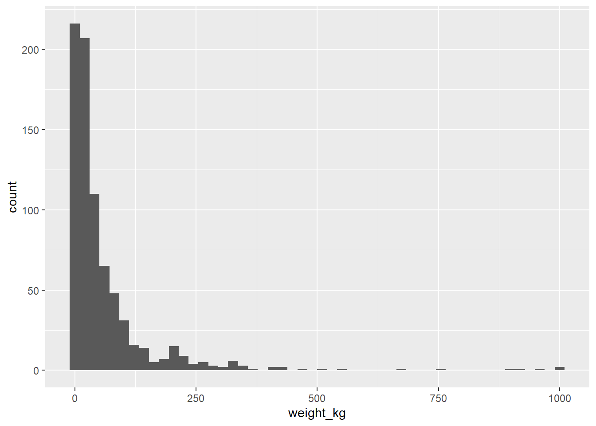

Kapitel 3 Einen Datensatz erkunden
TL;DR
- In RStudio können wir mit
viewden gesamten Dataframe oder Tibble im Skripteditor anzeigen. - Die Spaltennamen eines Tibble erhalten wir mit
colnames. - Mit
ncolundnrowerhalten wir die Anzahl Spalten und Zeilen eines Tibbles. Das Gleiche bekommen wir in einem Schwung mit der Funktiondim. - Einen schnellen Überblick über eine nominalskalierte Spalte und deren Werte bekommen wir mit
distinct(eindeutige Werte) odercount(zusätzlich die Häufigkeiten). - Für intervallskalierte Werte können wir besser mit
minundmaxdie Spannweite ermitteln oder mit einem Histogramm die Verteilung der Werte visualisieren. - Mit
is.nakönnen wir prüfen, ob ein Wert NA ist (nicht vorhanden) und so auch die Anzahl fehlender Werte ermitteln. - Mit der
summaryFunktion erzeugen wir eine Übersicht wichtiger statistischer Kennzahlen für eine Spalte. - Mit
headundtailerhalten wir die ersten oder letzten 10 Zeilen eines Tibble. Mit dem einzigen Parameter der Funktion können wir auch eine andere Anzahl zurückgeben.
3.1 Alle Daten anzeigen
Oft ist es hilfreich, einen schnellen Blick in einen Datensatz zu werfen, um beispielsweise die Werte einer Spalte zu überprüfen. Dafür können wir in RStudio die Funktion view() verwenden. Der Funktion übergeben wir den Tibble pokemon:
view(pokemon)Mit ⌨ Strg + Enter oder über den Button „Run“ in der rechten oberen Ecke des Skriptfensters führen wir die Zeile aus. Es öffnet sich ein neuer Tab mit einer tabellarischen Ansicht der Daten.
Figure 3.1: Die Anzeige eines Tibbles in RStudio mit view.
3.2 Spaltenamen ermitteln
Um mit einem Datensatz arbeiten zu können, benötigen wir eine Übersicht über seine Spalten. Diese liefert und die Funktion colnames:
pokemon %>%
colnames()## [1] "abilities" "against_bug" "against_dark"
## [4] "against_dragon" "against_electric" "against_fairy"
## [7] "against_fight" "against_fire" "against_flying"
## [10] "against_ghost" "against_grass" "against_ground"
## [13] "against_ice" "against_normal" "against_poison"
## [16] "against_psychic" "against_rock" "against_steel"
## [19] "against_water" "attack" "base_egg_steps"
## [22] "base_happiness" "base_total" "capture_rate"
## [25] "classfication" "defense" "experience_growth"
## [28] "height_m" "hp" "japanese_name"
## [31] "name" "percentage_male" "pokedex_number"
## [34] "sp_attack" "sp_defense" "speed"
## [37] "type1" "type2" "weight_kg"
## [40] "generation" "is_legendary"Auf diese Information greifen wir zurück, wenn wir später Analysen mit dem Datensatz durchführen oder bestimmte Spalten genauer untersuchen wollen.
3.3 Anzahl Spalten und Zeilen ermitteln
Einfache Informationen wie die Anzahl Spalten und Zeilen ermitteln wir mit den Funktionen ncol, nrow oder dim.
pokemon %>%
ncol()## [1] 41pokemon %>%
nrow()## [1] 801Wenn wir beide Werte in einer Ausgabe haben wollen können wir dim verwenden:
pokemon %>%
dim()## [1] 801 41dim gibt einen Vektor mit zwei Werten zurück. Der erste Wert steht für die Anzahl Zeilen, der zweite für die Anzahl Spalten. Wir können mit der Angabe der Position in eckigen Klammern auf jeden Wert einzeln zugreifen:
dimensions <- pokemon %>% dim()
# Anzahl Zeilen
dimensions[1]## [1] 801Und auf die Spalten:
# Anzahl Spalten
dimensions[2]## [1] 413.4 Wertebereich von Spalten bestimmen
3.4.1 Nominalskalierte Spalten
3.4.1.1 Eindeutige Werte mit distinct
Für nominalskalierte Spalten kann es interessant sein, alle Werte und eventuell deren Häufigkeit anzuzeigen. Die eindeutigen Werte bekommen wir mit der distinct Funktion:
pokemon %>%
distinct(type2)## # A tibble: 19 x 1
## type2
## <chr>
## 1 poison
## 2 <NA>
## 3 flying
## 4 dark
## 5 electric
...3.4.1.2 Eindeutige Werte und deren Häufigkeiten
Wenn wir zusätzlich noch die Häufigkeiten ermitteln wollen, können wir die Funktion count verwenden und als Parameter den Spaltennamen übergeben:
pokemon %>%
count(type1)## # A tibble: 18 x 2
## type1 n
## <chr> <int>
## 1 bug 72
## 2 dark 29
## 3 dragon 27
## 4 electric 39
## 5 fairy 18
...Meist es nützlich, direkt nach Häufigkeiten zu sortieren:
pokemon %>%
count(type1, sort = TRUE)## # A tibble: 18 x 2
## type1 n
## <chr> <int>
## 1 water 114
## 2 normal 105
## 3 grass 78
## 4 bug 72
## 5 psychic 53
...3.4.2 Intervallskalierte Spalten
Für intervallskalierte Spalten, also Spalten mit Zahlenwerten, eignen sich die Funktionen distinct und count nur bedingt. Oft sind es zu viele unterschiedliche Werte und das reine Zählen bringt nicht viel Aufschluss. Wenn wir distinct auf die Spalte weight_kg anwenden, erhalten wir zum Beispiel 422 unterschiedliche Werte:
pokemon %>%
distinct(weight_kg)## # A tibble: 422 x 1
## weight_kg
## <dbl>
## 1 6.9
## 2 13
## 3 100
## 4 8.5
## 5 19
## 6 90.5
## 7 9
## 8 22.5
## 9 85.5
## 10 2.9
## # ... with 412 more rowsIn diesem Fall ist es sinnvoller, den kleinsten und größten Wert zu kennen, um die Spannweite der Spalte zu ermitteln. Interessant wäre auch die Verteilung der Werte, etwa in Form eines Histogramm.
3.4.2.1 Größter und kleinster Wert
Den größten oder kleinsten Wert können wir mit max und min ermitteln:
pokemon %>%
select(weight_kg) %>%
max(na.rm = TRUE)## [1] 999.9pokemon %>%
select(weight_kg) %>%
min(na.rm = TRUE)## [1] 0.1Wir wissen also, dass die Werte sich zwischen 0,1 und 999,9 bewegen. Wie aber sind die Werte dazwischen verteilt?
3.4.2.2 Verteilung der Werte als Histogramm
Um die Verteilung der Werte innerhalb der Spalte weight_kg sinnvoll zu ermitteln müssen wir an dieser Stelle einen Exkurs in die Visualisierung von Daten machen:
pokemon %>%
select(weight_kg) %>%
filter(!is.na(weight_kg)) %>%
ggplot() +
aes(x = weight_kg) +
geom_histogram(bins = 50)
Das Historgramm zeigt uns, dass der größte Teil der Daten im kleineren Bereich liegt und nur wenige Ausnahmen große Werte jenseits der 300 aufweisen.
3.4.2.3 Anzahl fehlender Werte
Die Anzahl fehlender Werte, die in R als NA dargestellt werden, ist ein wichtiges Merkmal für die Qualität der Daten einer Spalte. Um diese Zahl zu ermitteln filtern wir die Daten mit der Funktion is.na und zählen anschließend die übrig gebliebenen Werte:
pokemon %>%
select(weight_kg) %>%
filter(is.na(weight_kg)) %>%
count()## # A tibble: 1 x 1
## n
## <int>
## 1 20Insgesamt haben somit 20 Pokémon keine Gewichtsangabe.
3.4.2.4 Zusammenfassung einer Spalte ausgeben
Um gleich mehrer statistische Größen zu berechnen und auszugeben können wir die Funktion summary verwenden:
pokemon %>%
select(weight_kg) %>%
summary()## weight_kg
## Min. : 0.10
## 1st Qu.: 9.00
## Median : 27.30
## Mean : 61.38
## 3rd Qu.: 64.80
## Max. :999.90
## NA's :203.5 Erste oder letzte Zeilen anzeigen
Die Funktion head gibt die ersten 10 Zeilen eines Tibbles zurück:
pokemon %>%
head()## # A tibble: 6 x 41
## abilities against_bug against_dark against_dragon against_electric
## <chr> <dbl> <dbl> <dbl> <dbl>
## 1 ['Overgrow', 'Chloro~ 1 1 1 0.5
## 2 ['Overgrow', 'Chloro~ 1 1 1 0.5
## 3 ['Overgrow', 'Chloro~ 1 1 1 0.5
## 4 ['Blaze', 'Solar Pow~ 0.5 1 1 1
## 5 ['Blaze', 'Solar Pow~ 0.5 1 1 1
## 6 ['Blaze', 'Solar Pow~ 0.25 1 1 2
## # ... with 36 more variables: against_fairy <dbl>, against_fight <dbl>,
## # against_fire <dbl>, against_flying <dbl>, against_ghost <dbl>,
## # against_grass <dbl>, against_ground <dbl>, against_ice <dbl>,
## # against_normal <dbl>, against_poison <dbl>, against_psychic <dbl>,
## # against_rock <dbl>, against_steel <dbl>, against_water <dbl>, attack <dbl>,
## # base_egg_steps <dbl>, base_happiness <dbl>, base_total <dbl>,
## # capture_rate <chr>, classfication <chr>, defense <dbl>, ...Über den Parameter der Funktion können wir die Anzahl der Zeilen verändern, um etwa nur die erste Zeile zu erhalten:
pokemon %>%
head(1)Die Funktion tail ist das Pendant dazu und gibt die 10 letzten Zeilen aus. Genau wie bei der head() Funktion können wir den Parameter für die Angabe der konkreten Anzahl Zeilen verwenden:
pokemon %>%
tail(1)